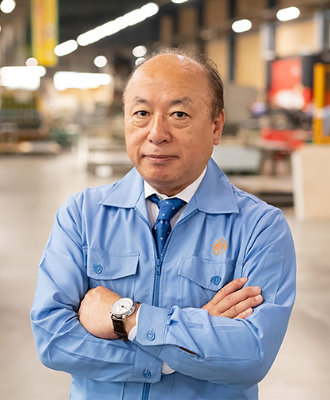

代表挨拶
長村製作所は社員一人ひとりがみなさまの暮らしに
安心・安全なそして快適な生活環境を提供するために
新たな価値を創造する物づくり会社として成長してまいります。
当社は1938年（昭和13年）の創業以来、「公衆電話ボックス」「光配線盤及び19インチラック」「通信用機材・資材等」の製造を通じ、通信社会インフラ整備構築に貢献してまいりました。
創業100年にむけて本業を基盤とし、常に技術を磨きお客様の多様なニーズに対応し「未来のICT社会を支える通信インフラ事業」、「全てのお客様に快適な時を提供する空間創造事業」を中心に積極的に事業展開を図ります。
そして多くのお客様から「長村製作所、ありがとう、助かったよ。」の言葉を頂くことを全社員の喜びとする企業を目指し、社員一丸となって邁進してまいります。
今後ともご愛顧賜りますように、よろしくお願い申し上げます。

代表取締役 飯山 進
会社基本情報
| 商号 | 株式会社 長村製作所 |
|---|---|
| 所在地 |
本社工場：〒329-4411 栃木県栃木市大平町横堀みずほ5-1 東京本部：〒170-0013 東京都豊島区東池袋1‐21‐11 オーク池袋ビル5F |
| 設立年月日 | 1938年5月5日 |
| 資本金 | 1,000万円 |
| 代表者 | 代表取締役 飯山 進 |
| 社員数 | 58名（2026年1月時点） |
| 業務内容 |
各種光配線盤等の設計・製造・販売 各種シールドキャビネット類の製造・販売 19インチラック等の設計・試作・製造・販売 屋外用公衆電話室の設計・製造・販売 喫煙BOXの設計・製造・販売 樋門ハウス等公共製品の設計・製造・販売 大型精密板金製品の設計・製造・販売 |
| 認証取得 |
1998年07月 ： ISO9001 取得 [屋外用公衆電話室・盤架類の設計、開発、販売] 2001年02月 ： ISO14001 取得 [屋外用公衆電話室・盤架類の設計、開発、販売] |
| 取引銀行 | 足利銀行小山支店、商工中金足利支店、みずほ銀行栃木支店 |
| 主要取引先 |
日本電信電話株式会社様、東日本電信電話株式会社様、西日本日本電信電話株式会社様 株式会社エヌ・ティ・ティ・ドコモ様、エヌ・ティ・ティ・コミュニケーションズ株式会社様 株式会社エヌ・ティ・ティ・データ様 その他グループ企業様 |
| 加入団体 |
全国通信用機器材工業協同組合 通信盤架工業協同組合 情報通信ネットワーク産業協会(CIAJ) 社団法人電気通信協会 環境事業団大平みずほ企業団地協同組合 |
会社沿革
| 昭和13年05月 | 合名会社 長村鉄工所設立（横浜市鶴見区） |
|---|---|
| 昭和21年11月 | 逓信省（現日本電信電話株式会社）と取引開始（配線盤） |
| 昭和28年08月 | 株式会社長村鉄工所設立 |
| 昭和29年08月 | 公衆電話室製作開始 |
| 昭和39年02月 | 本社を横浜市鶴見区より港北区に移転 |
| 昭和40年05月 | 栃木県小山市に小山工場新設 |
| 昭和42年12月 | 社名を株式会社 長村製作所に変更 |
| 昭和50年06月 | 本社を横浜市港北区より鶴見区に移転 |
| 平成09年05月 | 本社を横浜市より栃木県小山市に移転。 |
| 平成10年07月 | ISO-9001認証取得 |
| 平成11年10月 | 大平工場新設 |
| 平成13年02月 | ISO-14001認証取得 |
| 平成16年02月 | 本社を栃木県小山市より大平工場内へ移転 |
| 令和2年10月 | 東京本部新設（東京都豊島区・池袋） |
アクセス - 大平本社
〒329-4411 栃木県栃木市大平町横堀みずほ5-1
アクセス - 東京本部
〒170-0013 東京都豊島区東池袋1-21-11 オーク池袋ビル5F